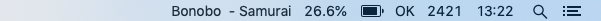

Fri 19 Feb 2021
Reading time: (~ mins)
A few weeks ago I came across a great project called BitBar. It allows you to easily display custom scripts on your menu bar. I won't repeat the installation and usage details which you can find here.
My menu bar now:
From left to right
#!bin/bash # Show music playing from my custom music program: https://alessandrominali.github.io/tiny_music_player.html ps u | grep afplay | grep -v grep | rev | cut -d/ -f1 | cut -d. -f2-10 | rev
#!bin/bash
# Usage across all CPUS
ps -A -o %cpu | awk '{s+=$1} END {print s "%"}'
#!bin/bash
# See internet connectivity status
ping -o -t 1 google.ca > /dev/null 2>&1
if [ $? -eq 0 ];
then
echo "OK"
else
RED='\033[0;31m'
echo -e "${RED}ERR"
fi
#!/usr/bin/ruby # How many Saturdays I have left to live: https://wiki.xxiivv.com/site/death.html puts (3_900 - (Time.now - Time.new(1992, 10, 20)) / 604_800).round
I love the simplicity behind BitBar. Enjoy :)